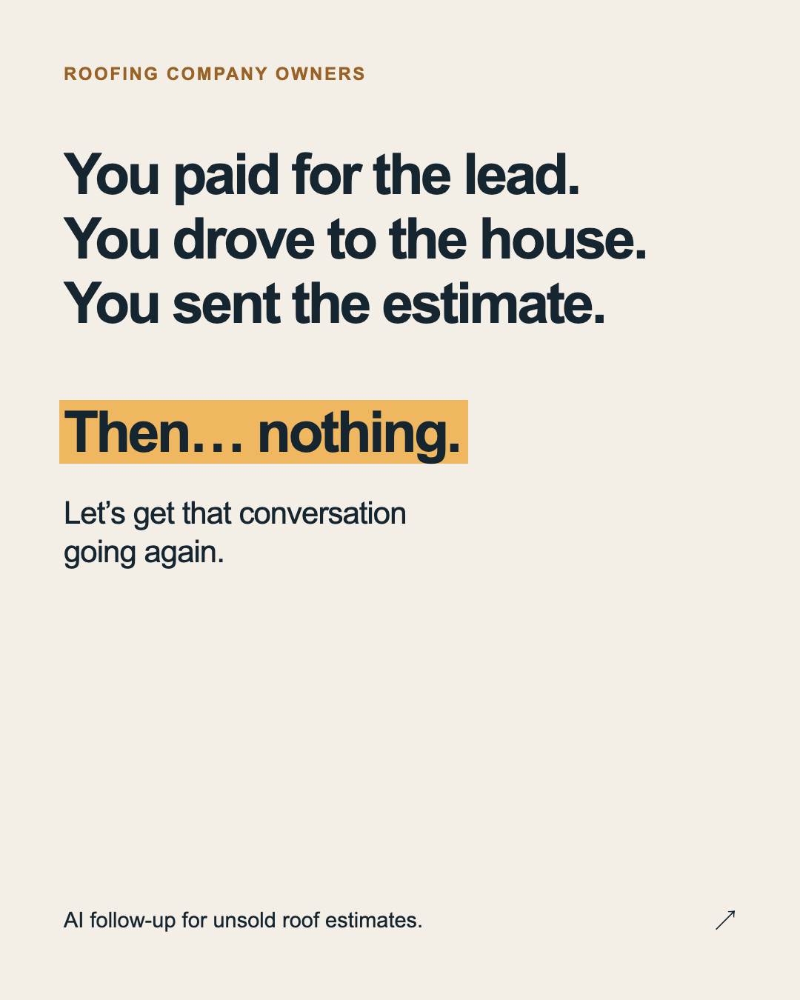

Roofline is a fictional agency brand used to test the repaired skills. The underlying problem has real implementation evidence. The proposed price, promise and creative have not been validated with buyers.
1. The niche
US residential retail roof-replacement companies using JobNimbus, with at least 200 eligible unsold estimates from the last 90 days. The buyer is the owner or sales manager. They already generate enquiries, have people who can close and have capacity to install more roofs.
2. The problem
They pay for enquiries, visit the property and send an estimate. Then the homeowner goes quiet. Follow-up varies by rep, replies are missed or nobody owns the next action. Some quotes are genuinely lost. Others are still worth a conversation. The business needs to distinguish the two and work the viable opportunities.
3. The solution
An estimate-recovery system that the agency installs and operates. It reads the agreed quote pipeline, excludes unsuitable records, sends approved follow-up, uses AI to interpret and answer routine replies, and hands interested homeowners to the correct roofing rep with context. The rep handles technical questions, negotiates and closes. Won/lost/opt-out changes stop the campaign.
Example: a homeowner asks whether the original estimate is still valid. The system retrieves an approved answer or flags it for the rep. It never invents an extension, discount or installation date. The rep has a next action instead of a forgotten quote.
4. The offer
“Turn the roof estimates you’ve already sent into cash collected. If we miss the agreed recovery target, we keep working without a management fee until we hit it.”
The recovery target and measurement period are agreed after qualification. Public marketing leads with the buyer’s desired result. Pricing belongs in the private sales conversation and proposal, not the page or ads.
The commitment covers the agreed follow-up work; software costs remain payable. We must establish a feasible scope and target before offering it to a real client. No revenue amount has been invented for this example.
It is understandable, close to an existing purchase decision and bounded enough for a student with technical support. It avoids the healthcare credentialing complexity. A real roofing business has publicly described its rehash operation; existing vendors and agencies sell this category. We are testing execution and positioning, not claiming invention.
The biggest objection is valid: “Why not just use Hatch or my existing CRM?” Hatch already provides AI follow-up and onboarding, and JobNimbus already sends automated messages. A buyer who has those working well should not buy this. The service must own a neglected workflow and deliver useful handoffs. If all they need is a reminder setting, this is the wrong offer.
6. The landing page
The page uses your Goh reference: centred outcome-led headline → dominant VSL area → application → mechanism → terms → objections → final CTA. Amber/charcoal replaces the rejected default green. There are no borrowed case studies. Because no presenter footage exists, the VSL area contains a clearly labelled, functional storyboard rather than a fake playable customer video.
Four angles, not four recolours. Feed exports are 1080 × 1350. Story exports are separately composed at 1080 × 1920. Primary text and headlines are below each image. No ads have been published.

Owner callout
Pain-aware / native story style
Primary text: You paid to get the enquiry. You sent a rep out. The estimate is sitting in your CRM. Roofline follows up on eligible unsold roof estimates and brings interested homeowners back to your team. See whether your pipeline fits the 60-day pilot.
Ad headline: Your next roofing conversation may already be quoted.
Problem recognition / AI-generated illustrative photograph
Primary text: The site visit is done. The estimate is out. Who owns the follow-up? We build and run an AI-assisted estimate-recovery workflow for residential roofing companies, so your reps get useful conversations instead of another list to chase.
Ad headline: Put your unsold roof estimates back in play.
Primary text: Some homeowners have moved on. Others still have a question. Our follow-up system helps separate the two, then gives your roofing rep the context to pick up the conversation. Your team keeps control of the sale.
Ad headline: AI follows up. Your roofing team closes.
Primary text: You’ve already paid for the enquiry and sent the roof estimate. Roofline helps turn those open quotes into paying jobs. If we miss the recovery target agreed before we start, we keep working without a management fee until we hit it. Eligibility and agreed terms apply; third-party costs remain payable.
Ad headline: Turn open roof quotes into paying jobs.
No client pipeline was accessed, no follow-up was sent, and no paid campaign ran. The functional preview does not establish demand, delivery reliability or conversion. Next: review one real eligible quote cohort, get a technical scope/cost commitment, and have owner conversations before treating this as a student recommendation.
Source-to-skill mapping and the actual checks are in the evidence page. Original source files remain editable; old rejected files have not been overwritten.